Helicatenoid


Weaving a transformable curved surface from catenoid to helicoid.
Load packages
using IntervalSets
using BasicBSpline
using StaticArrays
using ElasticSurfaceEmbeddingDefine the shape of the surface (non-periodic direction)
ElasticSurfaceEmbedding.𝒑₍₀₎(u¹,u²) = SVector(cos(u²)*cosh(u¹),sin(u²)*cosh(u¹),u¹)
n = 9
Da(n) = (-π/2..π/2,-π/(4n)..π/(4n))Da (generic function with 1 method)Compute the shape of the embeddings
show_strain(Da(n))
steptree = initial_state(Da(n))
newton_onestep!(steptree, fixingmethod=:fix3points)
newton_onestep!(steptree)
newton_onestep!(steptree)
newton_onestep!(steptree)
newton_onestep!(steptree)
refinement!(steptree, p₊=(0,1), k₊=suggest_knotvector(steptree))
newton_onestep!(steptree)
newton_onestep!(steptree)
pin!(steptree)
Export the shape in SVG format
export_pinned_steps("helicatenoid-a", steptree, unitlength=(40,"mm"), mesh=(18,1))1-element Vector{String}:
"helicatenoid-a/pinned/pinned-9.svg"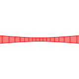
Define the shape of the surface (periodic direction)
ElasticSurfaceEmbedding.𝒑₍₀₎(u¹,u²) = SVector(cos(u¹)*cosh(u²),sin(u¹)*cosh(u²),u²)
Db(i,n) = (-π..π,(i-1)*π/(2n)..(i)*π/(2n))
# Check the maximum strain
for i in 1:n
show_strain(Db(i,n))
end
# Numerical computing
steptree = StepTree()
for i in 1:n
initial_state!(steptree, Db(i,n))
newton_onestep!(steptree, fixingmethod=:fix3points)
newton_onestep!(steptree)
newton_onestep!(steptree)
newton_onestep!(steptree)
newton_onestep!(steptree)
refinement!(steptree, p₊=(0,1), k₊=suggest_knotvector(steptree))
newton_onestep!(steptree)
newton_onestep!(steptree)
pin!(steptree)
end┌ Info: Strain - domain: [-3.141592653589793, 3.141592653589793]×[0.0, 0.17453292519943295]
└ Predicted: (min: -0.0025192446028988627, max: 0.0012596223014494311)
┌ Info: Strain - domain: [-3.141592653589793, 3.141592653589793]×[0.17453292519943295, 0.3490658503988659]
└ Predicted: (min: -0.0023721456374501803, max: 0.0011860728187250893)
┌ Info: Strain - domain: [-3.141592653589793, 3.141592653589793]×[0.3490658503988659, 0.5235987755982988]
└ Predicted: (min: -0.0021105110486750235, max: 0.0010552555243375109)
┌ Info: Strain - domain: [-3.141592653589793, 3.141592653589793]×[0.5235987755982988, 0.6981317007977318]
└ Predicted: (min: -0.0017852175622718365, max: 0.0008926087811359181)
┌ Info: Strain - domain: [-3.141592653589793, 3.141592653589793]×[0.6981317007977318, 0.8726646259971648]
└ Predicted: (min: -0.0014467651124962513, max: 0.0007233825562481255)
┌ Info: Strain - domain: [-3.141592653589793, 3.141592653589793]×[0.8726646259971648, 1.0471975511965976]
└ Predicted: (min: -0.0011324094230442416, max: 0.0005662047115221195)
┌ Info: Strain - domain: [-3.141592653589793, 3.141592653589793]×[1.0471975511965976, 1.2217304763960306]
└ Predicted: (min: -0.0008625146964147976, max: 0.000431257348207397)
┌ Info: Strain - domain: [-3.141592653589793, 3.141592653589793]×[1.2217304763960306, 1.3962634015954636]
└ Predicted: (min: -0.0006434206242097736, max: 0.00032171031210488546)
┌ Info: Strain - domain: [-3.141592653589793, 3.141592653589793]×[1.3962634015954636, 1.5707963267948966]
└ Predicted: (min: -0.00047257957312983996, max: 0.000236289786564919)
Export the shapes in SVG format
export_pinned_steps("helicatenoid-b", steptree, unitlength=(40,"mm"), mesh=(36,1))9-element Vector{String}:
"helicatenoid-b/pinned/pinned-9.svg"
"helicatenoid-b/pinned/pinned-18.svg"
"helicatenoid-b/pinned/pinned-27.svg"
"helicatenoid-b/pinned/pinned-36.svg"
"helicatenoid-b/pinned/pinned-45.svg"
"helicatenoid-b/pinned/pinned-54.svg"
"helicatenoid-b/pinned/pinned-63.svg"
"helicatenoid-b/pinned/pinned-72.svg"
"helicatenoid-b/pinned/pinned-81.svg"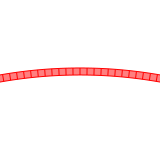 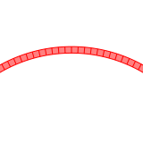 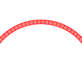 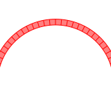 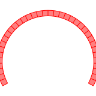 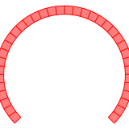  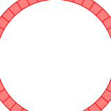 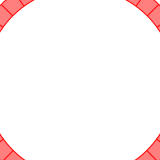
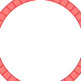 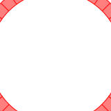
This page was generated using DemoCards.jl and Literate.jl.